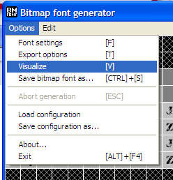

Creating Fonts with BMFont
Select a font Click Options->Font settings. Select a font from among those installed on your system. This is also where you will set the size (in pixels) of the font, and can make it bold or italic. Create your character set You can "paint-in" the characters you want to be included in your font. It is a good idea to select only the characters you really need to have in your bitmap font. You can also click the box next to each character set to select all characters in that set, or you can click Edit->Select chars from file, which will include all the characters found in the specified text file. Regardless of the selection method you choose to use, be sure not to forget to include the space character. Choose Export options Click Options->Export options If you plan to add any effect which increases the font's outline, you may have to pad each character so that they have more space in between them. Otherwise you'll see artifacts in your bitmap font when rendering it in-game. Tweaking the padding is a trial and error process. In most cases, 0 padding is fine. Set the width and height values to something that seems reasonable given the size of the font and number of characters, and we will verify these settings later. These must be powers of two (i.e. 64, 128, 256, 512, 1024, etc.) Choose a bit depth of 32 as this is needed to have an alpha channel (transparency). You can experiment with the presets and channel settings later, but for now, drop down the Presets list and choose "White text with alpha". This is normally the best setting and will allow us to color our text at runtime to any other color. Finally, set the Font descriptor format to Text, and set the texture format to PNG. Visualize and verify the atlas settings  Click Options->Visualize (or hit the 'V' key) This view allows you to verify that the settings you have chosen will produce the desired atlas. If you have much empty space, go back to the Export Options and reduce the width or height. NOTE: pay careful attention to the bit in the title bar next to the word "Preview" and make sure it says "1/1", or click the View menu item and make sure that the "Next Page" and "Prev page" options are grayed out. Otherwise, it means your width and/or height are set too small and not everything is going to fit on a single texture. If this is the case, increase the size of width, height, or both, remembering these must be powers of two. Save the file From BMFont's Options menu save the configuration settings file (extension: .bmfc) by choosing Save configuration as... And then save the bitmapped font itself by choosing Save bitmap font as... If you ever need to tweak it again, load the .bmfc file to restore the same settings with which you've created the .fnt file. It's a good idea to name both files identically. Rename extension to .txt  Rename the .fnt file so that it has a .txt extension. This helps Unity recognize the file as a TextAsset, which is what it needs to be to be used properly. Continue Now proceed back to the Creating Fonts page to see the next step in the "Using Fonts" section. |